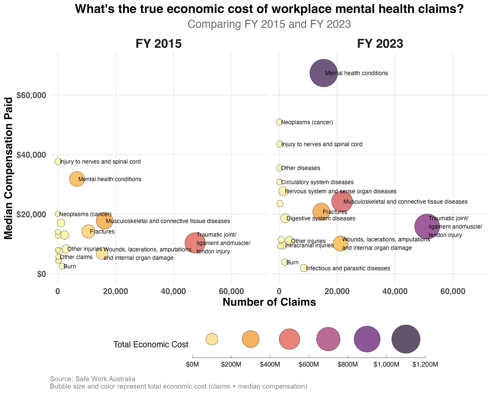

The Cumulative Cost of Poor Working Conditions on Mental Health
Psychosocial safety practitioners know poor working conditions cause harm. But the effects compound over time in ways most risk assessments completely miss.

Workforce data science for workplace health and safety, organisational psychology, and HR.
My research focuses on understanding the dynamics of decision-making, motivation, fatigue, and stress and how these processes affect our performance and mental health. I use computational, statistical, and/or mathematical models to understand how these complex processes evolve and interact over time. I use this knowledge to help design work environments that promote happier, healthier, and more effective work.
Learn more →
Building on this research, I work with teams in workplace health and safety, organisational psychology, and HR to help them use their data to make evidence-informed decisions on how they support their people. My areas of focus include psychosocial safety, employee engagement & retention, and incident forecasting.
Learn more →Research insights on workforce mental health, working hours, employee engagement, and psychosocial safety.

Psychosocial safety practitioners know poor working conditions cause harm. But the effects compound over time in ways most risk assessments completely miss.

Visualising the economic impact reveals a story most analyses miss.

Salary had no credible effect on job satisfaction once other factors were accounted for.
If you're interested in collaborating, I'd love to hear from you.
Get in touch →